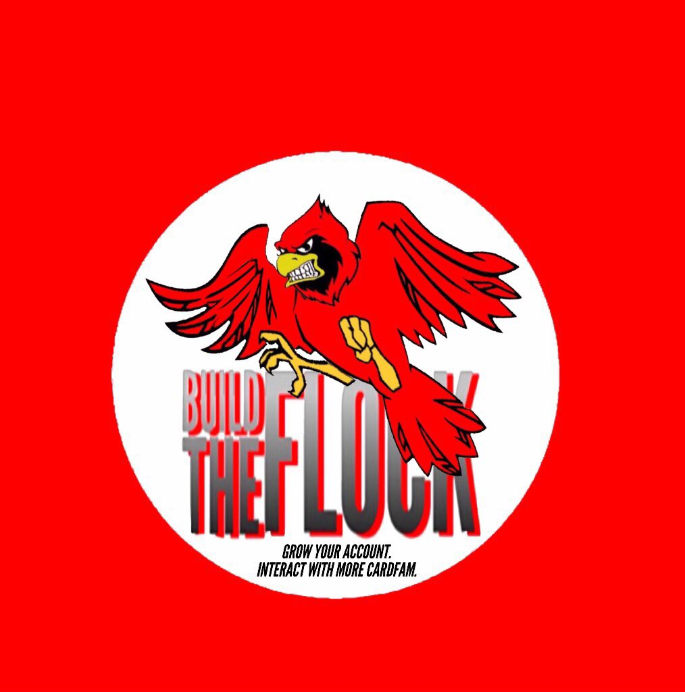

#BTF was created and designed by...well...it me Matt Harvey aka @CoachBourbonUSA on the tweetarz. I'm always accepting thoughts, suggestions, and feedback (good or bad.) Twitter is probably the best place to send input to me, but should you want to e-mail me I set up an e-mail for the project. You can write me at buildtheflock502@gmail.com. In the name of transparency I'll even leak a way to reach my personal cell 502-509-5612. I do ask you attempt other means to reach out to me before you go straight into dialing me up. I will also let people know this is a google voice number not my actual digits...so everything is recorded and archived...keep that in mind.
I'll include below an example of some functionality I will be adding as this project progresses. The intention is to build an atmosphere where people can create a profile and link any other social media, websites, or other ways to network online. What is below is by no means a finished product just a template to give a general idea of what I have in mind.

I enjoy debating whether squirt is pee (it is) and being a general crazy person online.
Huge fan of U of L sports, Cubs, whiskey, gaming, and shenanigans.
Code on code on code by day and #DatBarLife by night. Insomniac workaholic.
Host of the embarassingly bad podcast "#TheAgency Radio."